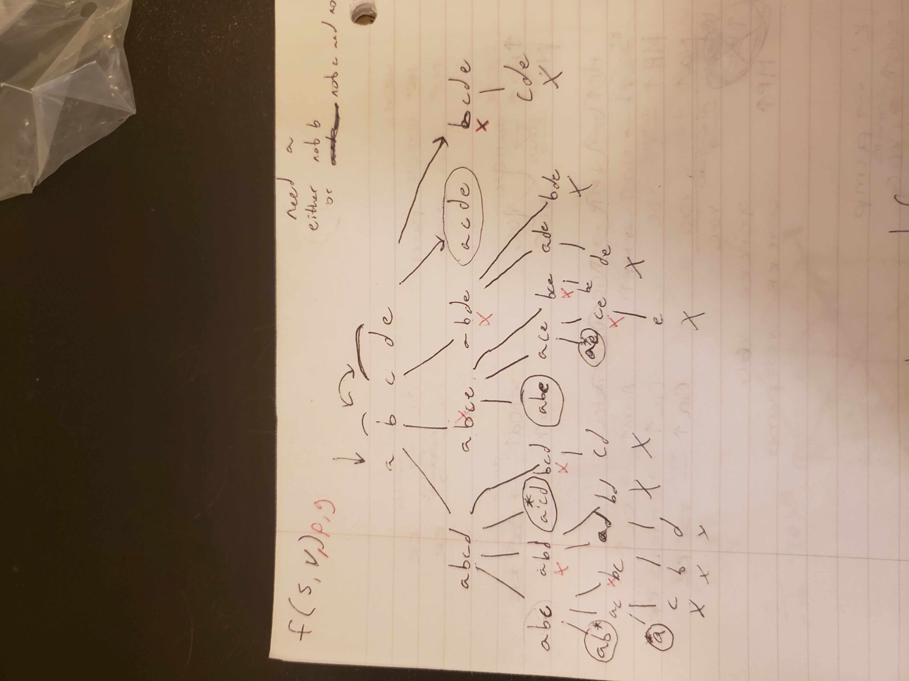

Structure Mapping Engine (SME-clj)
University of Colorado Anschutz Medical Campus
06/18/2021
Clone the Repo
- Code base: https://www.github.com/tuh8888/SME-clj
- This presentation: https://www.github.com/tuh8888/DnA-Code-Club-June-2021
npm install
xdg-open ./README.html
Analyzing biological mechanisms using analogy
Mechanisms are entities and activities and their organization such that they are productive of regular changes from initial to terminal conditions.
Analogy is the comparison or alignment of two structured representations
Analogy 101
- Base and target
- Corresponding elements
- Inference
Analogies in biology

DNA replication → zipper

Enzyme activity → lock-and-key
Computational tools for analogy
- Structure Mapping Engine (SME) (Falkenhainer 1989)
- Copycat (Hofstadter 1994)
- Analogical Mapping by Constraint Satisfaction (ACME) (Holyoak 1989]
- Learning and Inference with Schemas and Analogies (LISA) (Hummel 1997)
Structure mapping engine
Inputs:
- Base concept graph
- Target concept graph
- Rule set
Outputs:
- Global mapping containing:
- A set of match hypotheses (correspondences)
- Inferences, some of which are transferred from the base to the target
Overview of the strategy
- Generate potential match hypotheses
- Match locally consistent sets of match hypotheses (global mappings)
- Merge global mappings into clusters of match hypotheses
- Score global mappings
- Inference
- Transfer inferences
Benefits
- Relatively simple
- Seems to handle certain cases well
- Computationally tractable solution to difficult problem
Limitations
- Made for first-order logic
- Hard-coded rules and types
History of the code-base
Common Lisp implementation
Clojure re-write and simplification
- SME-clj
My fork: SME-clj reborn
- Mops representation
- Further simplification
Clojure 101
- Functional
- Dynamic
- Lisp (function calls are first)
- JVM or Browser hosted
- REPL-driven development
Examples
Examples
(+ 1 2 3)
(let [x 2
y 3
x (+ x y)]
(+ x y))
(->> ["Happy" 1 '(str (js/parseInt "21") "st") 2 3 "birthday!"]
(remove int?)
(map eval)
(interpose " ")
(reduce str))
(def greeting "Hello")
(defn hello [name]
(println (str greeting name "!")))
(hello "DnA code club")
SME-clj
Project organization
- Source
- Predefined rule sets
- Type logic
- Core pipeline
- Tests
- Notebooks
Predefined rule sets
- Named rules
- Functions
- Literal similarity vs analogy rules
Type logic
- Building knowledge graphs
- Handling different representations with multi-methods
Core pipeline
- Generate match hypotheses
- Create combinations of sets of match hypotheses
- Merge global mappings
- Finalize (score, etc.)
- Inference
- Transfer inferences
Example: Solar system model of the atom
Old vs. New: What changed?
Ease of use
Before
- Extremely large output and intermediate steps
- Dispersed, mutable knowledge
- Hard to experiment with predefined types
After
- Removed everything except match hypotheses in intermediate steps
- Condensed, immutable knowledge graph
- Keyword representation is much more flexible
MOPs representation
Memory Organization Packets (MOPs)
- Composed of slots
- Roles
- Fillers
- Meta-data
Before
- Predicate logic
Good for simple testing
# TODO example of predicate logic representation
After
- Conversion functions from predicate logic to MOPs
- Actual logic uses OWL-like knowledge graph
Tests
Challenges
Large intermediate output (Solved)
- Difficult to parse giant maps of repetitive information
"Correct" answers are not always intuitive
- While the algorithm is determinate, it's difficult to check if the result is correct.
- Difficult to test
- Multiple global mappings are output, some with intuitively "wrong" correspondences.
Combinatorics (Work in progress)
- All combinations of potentially corresponding entities gets huge quick.
- What I call the "maximum constrained subset problem"
- Given a set, \(S\), and a constraint, \(C\), find all maximum sized sets s.t. \(S\) satisfies \(C\)
- Number of possible subsets is \(2^{|S|}\)
- Naive BFS doesn't help
- O(2n)
The larger picture
Where it fits into my own work
- Uses my MOPs library
- Used in Knowtator for visualizing analogies
- Will be used in my analogical abstraction framework to identify correspondences
Alternatives
Calcium sparks and neuron spiking
TODO
- Handwritten library of analogies
- Solve the "maximum constrained subset problem"
- More interactive visualizations
Maximum constrained subset problem
BFS attempt

Logic attempt
Contact info and acknowledgments
- Email: harrison.pielke-lombardo@cuanschutz.edu
- GitHub: tuh8888@github.com
- Advisor: Larry Hunter
- Colorado Biomedical Informatics Training Program grant T15 LM009451